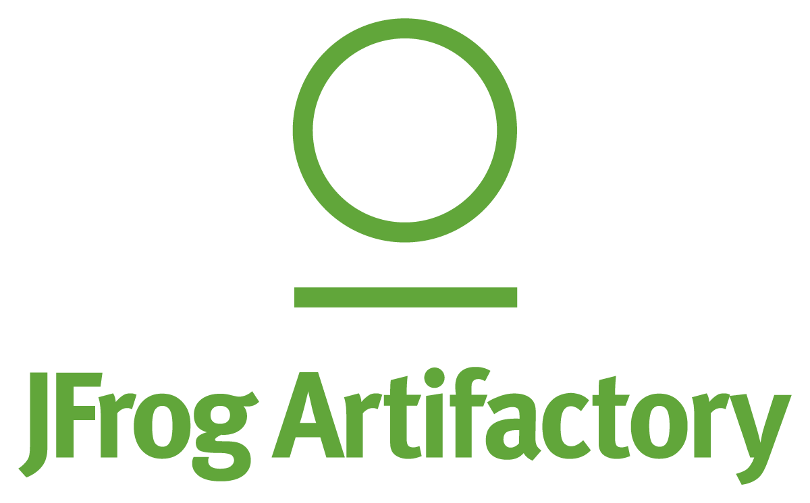
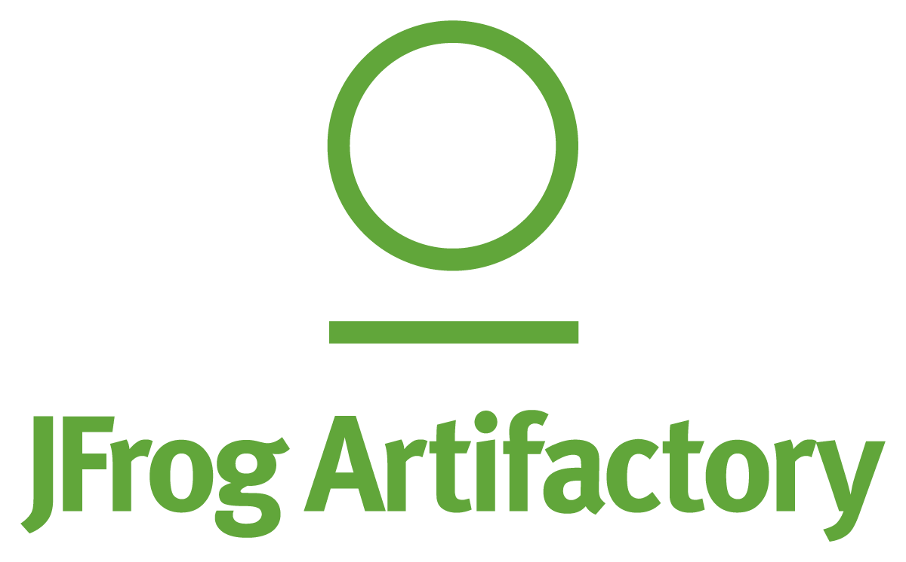

I'm Kate Lynn (Zurbano) Porto, a Senior DevOps professional with 5 years of experience in DevOps practices. I have a strong passion for web development and I'm currently exploring this exciting field in my free time. My goal is to transition from DevOps to Web Development, combining my technical skills with creativity to build innovative and user-friendly web applications.
mission: Empowering digital experiences through DevOps expertise and a commitment to continuous learning in web development.
About Me
I'm Kate Lynn (Zurbano) Porto, a Senior DevOps professional with 5 years of experience in DevOps practices. I have a strong passion for web development and I'm currently exploring this exciting field in my free time. My goal is to transition from DevOps to Web Development, combining my technical skills with creativity to build innovative and user-friendly web applications.
mission: Empowering digital experiences through DevOps expertise and a commitment to continuous learning in web development.
About Me

"Bridging DevOps and Web Dev for Digital Excellence."
Core Skills
- CI/CD Pipeline Development
- Disaster Recovery Planning
- Team Leadership and Mentorship
- Security Measures Implementation
- System Performance Monitoring
- Automation of Operational Tasks
- Scripting and Tool Development
- Research and Evaluation
Soft Skills
- Leadership and Team Management
- Collaboration and Cross-Functional Coordination
- Problem Solving and Critical Thinking
- Adaptability and Flexibility
- Time Management and Prioritization
- Decision Making and Strategic Planning
- Creativity and Innovation
Technical Skills
DevOps


 


Web


Work Experience
Senior Software Engineer
April 2021 - Present
- Developed and maintained CI/CD pipelines for 50+ applications, reducing deployment time and minimizing production issues.
- Troubleshoot build and deployment pipelines.
- Created Groovy and shell scripts.
- Migrated several application configurations from one tool to another (Jenkins to Harness, Bitbucket to GitLab).
- Researched and evaluated new technologies to improve system performance and reliability.
- Designed and implemented a branching strategy.
Software Engineer
December 2018 - March 2021
- Created Groovy and shell scripts for server maintenance and monitoring.
- Configured jobs in Jenkins for CI/CD.
- Deployed scripts to servers and resolved errors.
- Developed operation manuals and provided support.
- Attended Basic Selenium Automation Training and Performance Testing Training (Neoload).
Associate Software Engineer
July 2017 - November 2018
- Created Groovy and shell scripts for server maintenance and monitoring.
- Configured jobs in Jenkins for CI/CD.
- Deployed scripts to servers and resolved errors.
- Developed operation manuals and provided support.
- Attended Basic Selenium Automation Training and Performance Testing Training (Neoload).